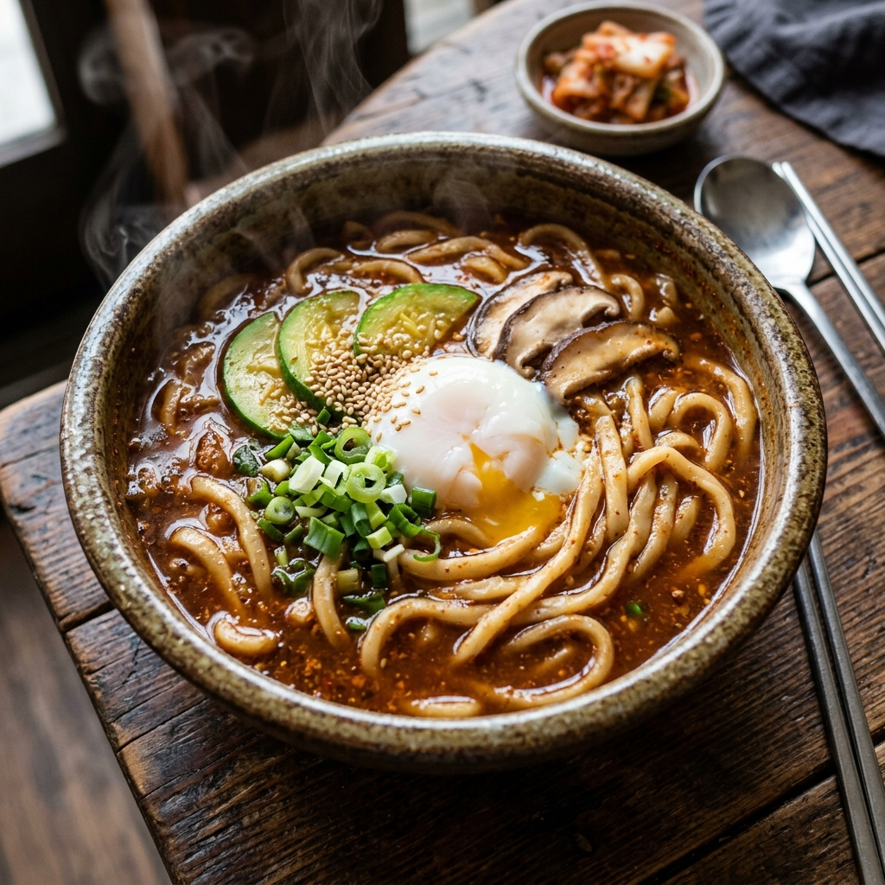
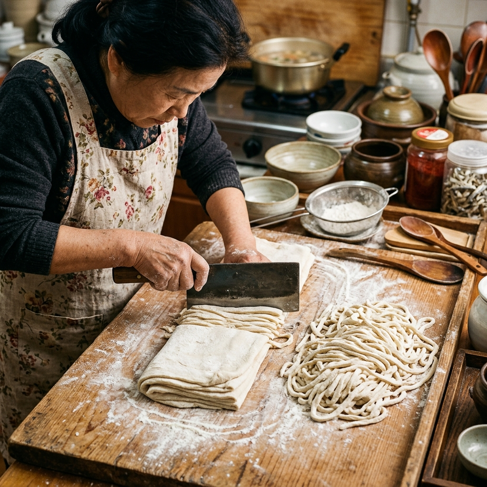
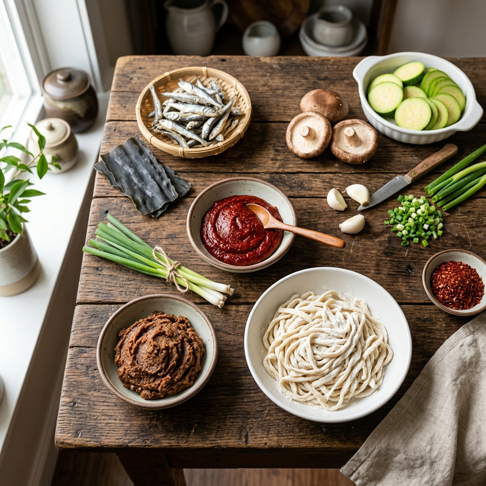

강원도 장칼국수 레시피: 고추장·된장 황금비율 육수와 쫄깃한 면발의 산도 조절 비법 완전 정복
강원도의 산골마을 어느 허름한 식당에서 처음 만난 장칼국수(醬칼국수). 칼칼하고 묵직한 육수 한 숟가락이 입 안에 퍼지는 순간, '이게 진짜 칼국수구나'라는 감탄사가 절로 나옵니다. 멸치나 사골만으로 끓이는 담백한 칼국수와 달리, 장칼국수는 고추장과 된장을 독창적인 비율로 블렌딩한 양념 육수가 맛의 핵심입니다. 칼칼한 고추장의 매운맛과 된장의 구수하고 깊은 감칠맛이 어우러져 한 번 먹으면 잊을 수 없는 강한 인상을 남기는 것이 장칼국수만의 정체성입니다. 이 글에서는 강원도 향토 음식 장칼국수의 맛을 집에서도 완벽하게 재현하기 위한 고추장·된장 황금비율, 면발 쫄깃함을 좌우하는 산도(pH) 조절 기법, 그리고 현지 식당에서도 잘 가르쳐주지 않는 육수 깊이 내기 비법까지 모두 공개합니다.
🍜 1. 장칼국수의 미학 — 강원도 산골이 낳은 매콤 구수한 향토 음식
장칼국수는 강원도 영동·영서 산간 지역에서 자연스럽게 발달한 향토 음식입니다. 산악 지형상 해산물을 구하기 어려운 강원도 내륙에서는 된장·고추장·간장 등 집에서 손수 담근 장류(醬類)가 모든 요리의 기본 양념 역할을 했습니다. 칼국수에도 자연스럽게 장이 들어가게 되었고, 이것이 단순한 '면 요리'를 넘어 영양가 높고 든든한 산골 가정식으로 자리매김하게 했습니다.
장칼국수의 맛 정체성은 세 가지 층위의 맛이 동시에 발현되는 구조에 있습니다. 첫 번째는 고추장이 만드는 붉은 매운맛: 캡사이신(Capsaicin)이 혀끝을 자극하지만 곧바로 사라지지 않고 목구멍까지 이어지는 잔열(殘熱)이 특징입니다. 두 번째는 된장이 만드는 발효 감칠맛: 메주콩의 단백질이 미생물에 의해 분해되며 생성된 다양한 아미노산(글루탐산, 아스파르트산 등)이 깊고 구수한 감칠맛을 만듭니다. 세 번째는 멸치와 다시마가 만드는 해물 베이스의 시원함: 장류의 무게감을 받쳐주는 베이스로, 이 셋이 조화를 이룰 때 비로소 장칼국수 특유의 복합적인 맛이 완성됩니다.
강원도에는 지역마다 장칼국수의 레시피가 조금씩 다릅니다. 원주·횡성 지역은 고추장 비율이 높아 더 칼칼한 편이고, 평창·정선 지역은 된장 비율이 높아 더 구수하고 진한 편입니다. 이 글에서 소개하는 레시피는 두 지역의 장점을 취한 황금비율 블렌딩으로, 너무 맵지도 너무 구수하지도 않은 균형 잡힌 맛을 목표로 합니다.
🛒 2. 재료 준비 매뉴얼 — 2인분 기준
| 분류 |
재료명 |
분량 (2인분) |
비고 |
| 면반죽 — 주재료 |
중력분 (다목적 밀가루) |
200g |
강력분 20% 혼합 시 더 쫄깃함 |
| 면반죽 — 수분 |
냉수 |
약 90ml |
산도 조절용 식초 5ml 포함 |
| 면반죽 — 염분 |
소금 |
3g (약 1/2 작은술) |
밀가루 글루텐 강화용 |
| 육수 베이스 |
국물용 멸치 (대멸) |
20g (약 10마리) |
머리와 내장 제거 필수 |
| 육수 베이스 |
다시마 |
10cm × 10cm, 1장 |
끓기 전에 건져내기 |
| 육수 베이스 |
물 |
1,200ml |
끓인 후 약 1,000ml 남음 |
| 장양념 — 핵심 |
재래 고추장 |
2큰술 (약 30g) |
순창 또는 태양초 고추장 권장 |
| 장양념 — 핵심 |
재래 된장 |
1큰술 (약 15g) |
집된장 > 시판 된장 (감칠맛) |
| 장양념 — 보조 |
고춧가루 |
1큰술 |
색감 보강 및 매운맛 조절 |
| 장양념 — 보조 |
다진 마늘 |
1큰술 |
냄새 제거 및 향미 강화 |
| 채소 |
애호박 |
1/3개 |
반달 모양으로 얇게 슬라이스 |
| 채소 |
표고버섯 또는 팽이버섯 |
2~3장 / 1/2봉 |
감칠맛 보강 |
| 채소 |
대파 |
1/2대 |
송송 썰기 |
| 고명 |
달걀 |
2개 |
수란(水卵) 또는 반숙 권장 |
| 마무리 양념 |
참기름, 들기름 |
각 1작은술 |
완성 직전 투입 |

[강원도 장칼국수 완성작] / AI 제작 이미지
⚗️ 3. 황금 비율 양념장 — 고추장 2 : 된장 1의 비밀
장칼국수에서 가장 중요한 것은 단연 고추장과 된장의 비율입니다. 이 비율이 틀어지면 맛의 정체성 자체가 달라집니다. 수십 가지 레시피를 실험한 끝에 도달한 황금 비율은 고추장 2 : 된장 1입니다.
🔢 황금 비율 양념장 만들기
[재료] 고추장 2큰술 + 된장 1큰술 + 고춧가루 1큰술 + 다진 마늘 1큰술 + 국간장 1작은술 + 참기름 1/2작은술
[방법]
① 위의 재료를 모두 작은 볼에 넣고 고루 섞습니다.
② 멸치 육수 200ml를 소량씩 부어가며 풀어줍니다 (덩어리가 남지 않도록).
③ 완성된 양념장을 나머지 육수 800ml에 넣고 한소끔 끓여 맛을 균일하게 섞습니다.
⚠️ 핵심 포인트: 된장을 직접 육수에 넣으면 된장 덩어리가 남아 식감이 거칠어집니다. 반드시 별도 볼에서 액체와 충분히 섞은 뒤 투입하세요.
고추장만 쓸 때와 비교해 된장을 1/3 비율로 섞었을 때 어떤 변화가 생기는지 설명드립니다. 순 고추장만 쓰면 매운맛이 단선적이고 표면적입니다. 여기에 된장이 더해지면 글루탐산 계열 아미노산이 보강되어 매운맛에 입체감이 생깁니다. 혀 전체에 감칠맛이 퍼지고 뒷맛에 구수한 여운이 남아, 한 그릇을 비운 뒤에도 더 먹고 싶다는 생각이 들게 만드는 것이 이 비율의 마법입니다.
💡 4. 쫄깃한 면발의 비밀 — 산도(pH) 조절 기법
칼국수 면발이 쫄깃한지 퍼지는지를 결정하는 가장 중요한 요소는 놀랍게도 반죽의 산도(pH 값)입니다. 일반적인 칼국수 레시피에서는 이 사실을 언급하지 않지만, 강원도 현지 장칼국수 명인들 사이에서는 '식초 반죽'이라는 기법이 비밀 노하우로 전해져 내려옵니다.
그 원리는 다음과 같습니다. 밀가루 단백질인 글루텐(Gluten)은 산성 환경(낮은 pH)에서 가교결합(Cross-linking)이 활성화되어 더 촘촘하고 강한 그물 구조를 형성합니다. 이 그물이 치밀할수록 면발이 탄력 있고 쫄깃해지며, 끓는 국물에 넣어도 쉽게 퍼지지 않습니다.
🔬 산도 조절 기법 실천법
면반죽용 물 90ml에 백식초(또는 현미식초) 5ml를 섞어 넣습니다.
이 정도 비율(약 5.5%)이면 반죽에서 신맛이 느껴지지 않으면서 글루텐 강화 효과를 충분히 얻을 수 있습니다.
⚠️ 식초를 5ml 이상 넣으면 반죽에서 산미(酸味)가 느껴질 수 있습니다. 반드시 5ml를 초과하지 마세요.
⚠️ 레몬즙으로 대체하면 시트러스 향이 배어들 수 있으므로 무향 식초를 사용하세요.
🔪 5. 전처리 공정 — 면반죽 & 숙성의 과학
쫄깃한 장칼국수 면발을 위한 반죽 및 숙성 과정을 단계별로 안내해 드립니다.
[면반죽 전처리 3단계]
Step 1. 수화(水化) — 글루텐 그물 형성 시작 (3분)
중력분 200g에 소금 3g을 미리 고루 섞어 둡니다. 소금이 글루텐 형성을 돕는 동시에 면발에 적절한 간이 배이게 합니다. 식초 5ml를 넣은 냉수 90ml를 한꺼번에 붓지 말고 3~4회에 나누어 조금씩 부으면서 젓가락으로 가루 상태로 뭉칩니다. 이 단계에서 성급하게 반죽하면 글루텐이 고르게 형성되지 않습니다.
Step 2. 치대기(Kneading) — 글루텐 그물 완성 (10분)
어느 정도 뭉쳐지면 손으로 치대기 시작합니다. 손목을 이용해 체중을 실어 앞으로 밀고 접고 다시 미는 동작을 반복합니다. 최소 10분 이상 치대야 글루텐 그물이 균일하게 발달합니다. 제대로 치댄 반죽은 표면이 매끄럽고 귓볼처럼 부드러운 촉감이 나야 합니다.
Step 3. 숙성(熟成) — 글루텐 이완 (최소 30분)
치댄 반죽을 랩이나 젖은 행주로 싸서 상온에서 최소 30분 숙성합니다. 숙성은 치대기로 과도하게 긴장된 글루텐을 이완시켜 밀대로 밀 때 반죽이 찢어지지 않고 얇게 펴지게 합니다. 1시간 이상 숙성하면 더욱 좋습니다. 냉장 숙성(1~2시간)도 가능하며, 이 경우 더 치밀한 글루텐 구조가 완성됩니다.
🔥 6. 조리 단계 상세 가이드
Step A. 멸치 육수 내기 (15~20분)
냄비에 물 1,200ml를 붓고 머리와 내장을 제거한 대멸 20g과 다시마 1장을 넣습니다. 중불로 가열해 끓기 직전(약 85℃)에 다시마를 먼저 건져냅니다. 다시마를 끓는 물에 오래 두면 점액질(알긴산)이 녹아 국물이 끈적해지고 쓴맛이 납니다. 다시마를 건진 후 중불에서 10분 더 끓여 멸치 육수를 완성하고 멸치도 건져냅니다.
Step B. 육수에 양념장 투입 (5분)
완성된 멸치 육수에 미리 풀어둔 황금 비율 양념장을 넣고 중불에서 한소끔 끓입니다. 이 과정에서 고추장·된장의 날 된장 맛이 사라지고 육수와 완전히 어우러지는 마이야르 반응이 일어납니다. 맛을 보아 간이 부족하면 국간장으로 조절합니다.
Step C. 면 및 채소 투입 (8~10분)
숙성된 반죽을 0.3~0.4cm 두께로 밀어 칼로 0.4~0.5cm 폭으로 끊습니다. (밀 때 덧가루 충분히 사용) 끓는 육수에 면을 넣고, 면이 위로 떠오르면 애호박 반달썰기와 표고버섯을 넣습니다. 중약불에서 3~4분 더 끓인 후 달걀 수란을 올립니다. 불을 끄고 대파 송송 썰기, 참기름, 들기름을 두른 뒤 완성합니다.

[장칼국수 면 손반죽 및 칼 썰기] / AI 제작 이미지
✅ 7. 핵심 체크포인트 & 자주 하는 실수
⚠️ 장칼국수 실패를 막는 5가지 체크포인트
① 된장이 충분히 풀리지 않으면 국물에 짠 덩어리가 씹힙니다. 반드시 소량의 육수에 된장을 먼저 완전히 풀어 투입하세요.
② 면을 끓는 물에 넣기 전 덧가루를 충분히 털지 않으면 국물이 탁해지고 전분 냄새가 납니다. 체에 걸러 덧가루를 제거하세요.
③ 고추장이 오래 끓으면 매운맛이 날아가고 쓴맛이 올라옵니다. 양념장을 투입한 후 강불로 5분 이상 끓이지 마세요.
④ 면을 너무 얇게 밀면 국물에 넣는 순간 퍼져버립니다. 0.3~0.4cm 두께를 유지하세요.
⑤ 식초를 너무 많이 넣으면 반죽에서 신맛이 납니다. 90ml 물 기준 최대 5ml를 초과하지 마세요.
🎖 8. 전문가 팁 — 한 차원 높은 장칼국수를 위해
기본 레시피를 마스터했다면 다음 단계로 넘어가 장칼국수의 맛을 더욱 끌어올려 보세요.
① 사골 육수 혼합 기법: 멸치 육수 대신 멸치 육수 70% + 시판 사골 육수 30%를 혼합하면 국물에 콜라겐 특유의 걸쭉한 무게감이 생겨 한층 더 진한 맛이 납니다. 강원도 산간 지역 장칼국수 명인들이 자주 사용하는 기법입니다.
② 된장 볶음 기법: 된장을 그냥 넣지 않고 팬에 참기름을 두르고 된장을 1분 정도 중불에서 볶은 후 투입하면, 된장의 날 냄새가 사라지고 고소한 견과류 향(마이야르 반응)이 추가됩니다. 한 번 해보면 그 차이를 즉시 알게 됩니다.
③ 우거지(시래기) 추가: 강원도 정선·태백 지역 장칼국수에는 삶아서 물기를 꼭 짠 우거지(무청 또는 배추 시래기)를 넣어 채소의 풍미를 더합니다. 시래기의 구수한 맛이 된장과 시너지를 내어 더욱 풍성한 맛을 만듭니다.

[장칼국수 핵심 재료 구성] / AI 제작 이미지
🥗 9. 영양 정보 & 어울리는 음식·주류 페어링
장칼국수(2인분 기준 1인 1공기)의 대략적인 영양 성분을 정리해 드립니다.
| 영양 성분 |
1인분 기준 (약 500ml 국물 + 면 100g) |
특이사항 |
| 칼로리 |
약 380~420kcal |
면 두께에 따라 변동 |
| 탄수화물 |
약 65g |
밀가루 면이 주 공급원 |
| 단백질 |
약 12~15g |
달걀 추가 시 +6g |
| 나트륨 |
약 1,200~1,500mg |
고추장·된장 함량 높음, 조절 필요 |
| 유산균·발효 성분 |
풍부 |
된장의 미생물 유래 성분 |
어울리는 음식(페어링): 장칼국수는 그 자체로 든든한 한 끼가 되지만, 함께 즐기면 더 좋은 사이드 메뉴가 있습니다. 깍두기: 새콤한 깍두기가 장칼국수의 매콤·구수한 맛을 중화시켜 입맛을 계속 살려줍니다. 수육(보쌈용 돼지고기): 장칼국수를 메인으로 수육을 곁들이면 단백질이 보충되어 영양적으로도 완벽한 식사가 됩니다. 배추 겉절이: 산뜻한 겉절이가 장 특유의 무게감을 덜어주고 개운한 마무리를 만들어줍니다.
💡 장칼국수 보관 방법
면이 들어간 상태로 보관하면 면이 불어버립니다. 남은 국물은 따로 보관(냉장 3일)하고, 면은 차갑게 헹궈 따로 밀폐 용기에 보관(냉장 1~2일, 냉동 2주)하세요. 먹을 때 국물을 다시 끓인 후 면을 넣어 데우면 됩니다.
#장칼국수
#강원도칼국수
#장칼국수레시피
#고추장된장칼국수
#칼국수만들기
#향토음식
#집밥레시피
#한식레시피
#쫄깃한면발
#황금레시피